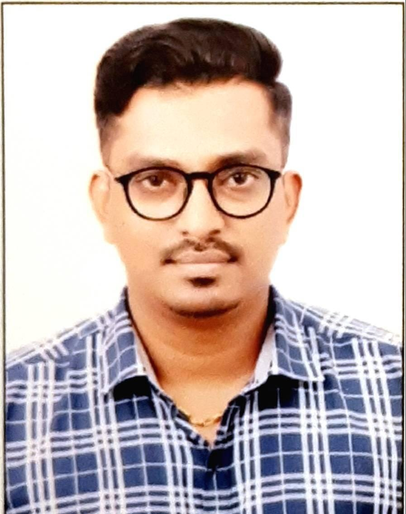

Gautam Gangadhar Karmakar

Phone: 7208379592 / 9653332636
Email: Gautamk1988@gmail.com
Naigaon (East), Mumbai, Maharashtra
Summary
-
Full Stack Developer with basic knowledge of frontend and backend development
and hands-on practice in building simple web applications. Familiar with frontend frameworks,
backend logic, and database concepts. Quick learner with a strong interest in web technologies,
actively learning and enthusiastic about growing as a software professional.
-
IT professional with 9+ years of experience in infrastructure and VDI administration,
including hands-on work with Azure Virtual Desktops, virtual machines, Windows Server,
and Active Directory. Experienced in system maintenance, patching, troubleshooting,
application management, and supporting enterprise IT environments
with strong operational and support skills.
Skills
- Frontend: HTML, CSS, JavaScript, Responsive Design
- Backend: Node.js basics, REST APIs, Server side logic
- Database: SQL / MySQL, CRUD operations
- Full Stack: Frontend / Backend integration, debugging
- Tools: Git/GitHub, Postman, VS Code
- Cloud (Basic): Application deployment on Azure
Work Experience
-
Capgemini India Pvt. Ltd.
VDI Administrator (April 2022 – Present)
- Managed and supported Azure Virtual Desktop environments
- Deployed new VDIs, performed patching, and handled application installations
- Provided troubleshooting and operational support for enterprise users
-
Sutherland Global Services / Global E Services / Sparsh (BPO)
Customer Support Roles
- Provided technical and customer support, troubleshooting issues, and handling client communications
Education
-
Bachelor of Commerce (B.Com)
Mumbai University | October 2012
-
Higher Secondary Certificate (HSC)
Abhinav College of Commerce | June 2009
-
Secondary School Certificate (SSC)
St. Francis high School | June 2007
Certifications
-
Microsoft Azure Fundamentals (Az-400)
Candidate ID: MS0992052838
Personal Information
- Date of Birth: 14th October 1988
- Gender: Male
- Marital Status: Married
- Nationality: Indian
- Languages: English, Hindi, Bengali, Marathi
- Hobbies: Anime, Spending Time with Family and kids, Listening Music